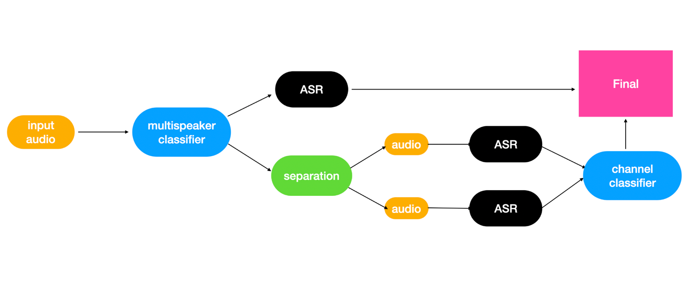
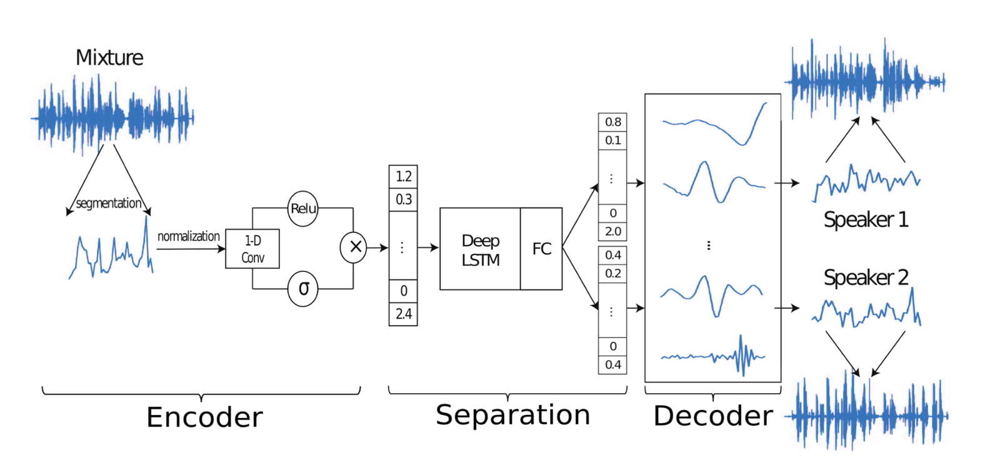
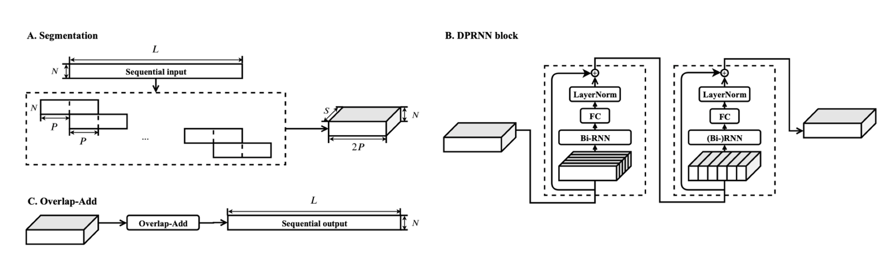
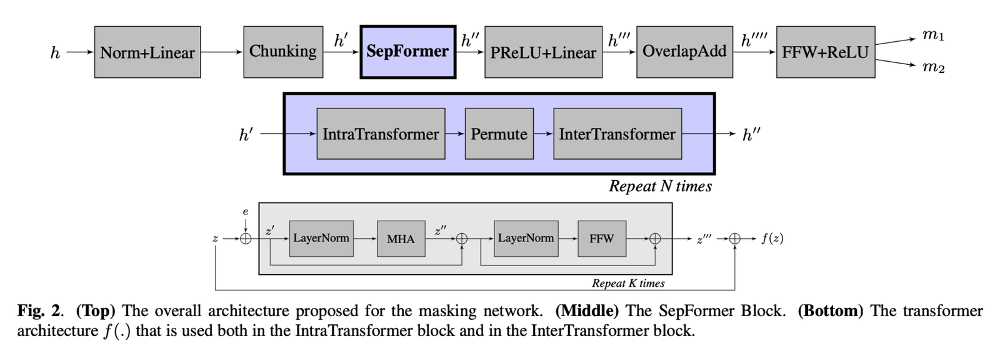
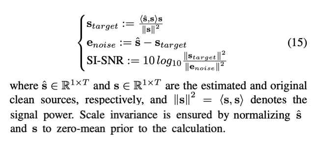

SberDevices · Хабр · машинное обучение
Статья для блога SberDevices на Хабре
SberDevicessberdevices.ru
SberDevices — компания экосистемы Сбера, основана в 2019 году. Разрабатывает семейство виртуальных ассистентов «Салют», умные колонки, ТВ-приставки SberBox и телевизоры, а также B2B-сервисы речевой аналитики. Над технологиями компании работают больше 1500 человек.
- Площадка
- Хабр, блог SberDevices
- Формат
- Технический лонгрид от лица ML-инженера
- Год
- 2022
Команде речевых технологий нужна была статья, которая покажет её разработку профессиональному сообществу и усилит бренд работодателя. По материалам ML-инженера подготовила технический лонгрид для корпоративного блога на Хабре.
Задача
Рассказать о сложной ML-разработке так, чтобы статью дочитали и инженеры, и широкая IT-аудитория.
Решение
Выстроила текст от проблемы к решению, объяснила термины без упрощения сути, пояснила архитектуру схемами.
Результат
19 тыс. охвата, 47 добавлений в закладки и 17 комментариев в блоге SberDevices на Хабре.
Как мы сделали распознавание речи нескольких говорящих
Статья для блога SberDevices на Хабре: как научить систему распознавания речи понимать запись, на которой одновременно говорят несколько человек.
Распознать речь, когда говорят несколько человек сразу, — до сих пор одна из самых сложных задач в индустрии. У неё даже есть своё имя — cocktail party effect, «эффект коктейльной вечеринки». Есть одна запись, голоса на ней перебивают друг друга, где-то на фоне играет музыка, а нужно понять, кто и что сказал.
В этой статье я расскажу, как мы решили эту задачу в SberDevices и научились точно распознавать записи с несколькими говорящими. Разберём архитектуру системы, сложности, с которыми столкнулись, и цифры, которые получили в итоге.
Почему это важно
Системы распознавания речи, включая сквозные end-to-end-модели, на выходе выдают одну фразу. Голос на фоне или человек, который что-то добавляет к словам первого, для модели — out-of-domain-данные, то есть то, чего она не видела при обучении. Как с ними поступать, модель не знает, и качество распознавания падает.
Самое простое решение — добавить такие записи в обучение и разметить только то, что нужно получить на выходе. Пользователь обращается к ассистенту, на фоне работает телевизор — размечаем только обращение. У этого пути три минуса:
- качество может вырасти, но нагрузка на систему распознавания тоже растёт;
- результат не всегда релевантен;
- собрать достаточно данных и качественно дообучить модель непросто.
Главное же — такой подход не работает для составных запросов, где второй голос не мешает, а дополняет первый. Вот пример из жизни:
Взрослый«Включи «Босс-молокосос»…»
Ребёнок«…Два!»
Если система отбросит реплику ребёнка как фон, она включит не тот фильм.
Такие запросы типичны для виртуальных ассистентов «Салют», но в экосистеме Сбера распознавание речи работает во многих продуктах. Во внутренних сервисах часто нужно расшифровать длинную запись, например подкаст. Того же хотят клиенты нашего внешнего API.
Коротко: что такое ASR
ASR (Automatic Speech Recognition) — технология, которая превращает звук в текст. Устройство записывает речь, очищает запись от шума и выравнивает громкость, разбивает звук на мельчайшие единицы речи — фонемы — и по ним, шаг за шагом, собирает вероятные слова и предложения.
В таких записях голоса постоянно накладываются друг на друга, а для расшифровки нужна своего рода стенограмма: кто что сказал. Понятия «основной запрос» здесь просто нет, поэтому разметка не поможет. Нужна система, которая сама определит число говорящих, выдаст расшифровку для каждого и сохранит общий контекст разговора.
Как можно решить задачу
Мы рассматривали два пути. Первый — научить одну модель всему сразу. Второй — поставить перед распознаванием отдельный модуль, который сначала разделит голоса.
Одна модель на всё
Модель с несколькими выходами или со специальными токенами, разделяющими говорящих (пример подхода).
- нужно полностью менять обучение
- растёт нагрузка на модель ASR
- можно потерять качество на обычных записях с одним голосом
Сначала разделить голоса наш выбор
Отдельная нейросеть разносит голоса по каналам, а каждый канал распознаётся привычной моделью.
- модель ASR не меняется
- разделитель можно улучшать отдельно
- обычные записи идут по старому пути
Сначала мы воспроизвели подход из статьи Voice Separation with an Unknown Number of Multiple Speakers: там нейросети с гейтами разделяют голоса в несколько этапов, и каждый голос остаётся в своём выходном канале. Пока мы доводили этот бейзлайн, вышла статья Attention is All You Need in Speech Separation с моделью SepFormer — нейросетью на основе Transformer без рекуррентных слоёв. Мы попробовали её на своих данных и качество заметно выросло.
Архитектура: путь записи через систему
Результаты SepFormer нас устроили, и на их основе мы построили архитектуру всей системы. Запись проходит её так:
- 1Сколько голосов
Звук попадает в классификатор, который определяет число говорящих — N.
- 2Один голос — обычный путь
Если говорящих меньше двух, запись распознаётся как обычно.
- 3Несколько голосов — разделение
Если голосов два, запись уходит в разделитель и раскладывается на N каналов.
- 4Распознавание каждого канала
Каждый канал распознаётся отдельно, и мы получаем N гипотез.
- 5Выбор главного
Отдельный классификатор смотрит на аудио и тексты и выбирает канал с основным запросом.
Распознавание исходной, неразделённой записи запускается параллельно и тоже участвует в финальном выборе: иногда именно оно оказывается самым точным. Целиком схема выглядит так.

Дальше разберём каждый компонент по очереди: что он делает, как устроен и как мы проверяли его качество.
Шаг 1. Сколько голосов на записи
На этом шаге важно как можно быстрее решить, по какой ветке пойдёт запись: пока ответа нет, остальная система ждёт, а время обработки запроса растёт. Поэтому модель должна быть маленькой и опираться только на звук — текста от ASR к этому моменту ещё нет.
Мы взяли ResNet18 и обучили её на спектрограммах — «картинках» звука, где по горизонтали время, а по вертикали частоты. Изменения минимальные: один входной канал вместо трёх и три класса на выходе.
Записи, где одновременно говорят больше двух человек, встречаются редко и обрабатываются сложнее, поэтому в первой версии мы их не рассматривали. Качество классификатора проверяли стандартными метриками: accuracy, precision, recall и F1.
Шаг 2. Разделение голосов
Это самая «тяжёлая» и самая интересная часть системы. Прежде чем перейти к SepFormer, посмотрим на общую схему, на которой построено большинство моделей разделения речи.

На вход подаётся звуковая волна. Энкодер, обычно свёрточный, превращает её в признаки. Затем для каждого будущего канала модель предсказывает маску и умножает на неё признаки: так голоса расходятся. Декодер превращает разделённые признаки обратно в звук — по сути, делает операцию, обратную энкодеру.
Почему длинные записи — проблема
SepFormer отвечает за этап разделения и построена на архитектуре Transformer. У трансформеров есть слабое место: время работы механизма внимания растёт квадратично с длиной входа, и на длинных записях вычисления становятся очень медленными. Рекуррентные сети тоже плохо справляются с длинными последовательностями, но по другой причине: их нельзя считать параллельно по времени, только шаг за шагом.
Решение: двойной путь
Длинную запись режут на перекрывающиеся фрагменты — «чанки» — и обрабатывают их параллельно. Сначала модель смотрит внутрь каждого фрагмента, затем «поперёк» — на одинаковые моменты разных фрагментов. Так она видит и локальные, и глобальные зависимости, а длина, с которой работает каждый шаг, становится намного меньше.
Этот механизм, Dual-Path, придумали авторы статьи о Dual-path RNN, предшественницы SepFormer. На схеме видны оба «разреза» данных: внутри чанков и между ними.

SepFormer берёт эту идею и заменяет рекуррентные блоки трансформерами: один смотрит внутрь фрагментов, другой — между ними. Блок повторяется несколько раз, и с каждым проходом голоса разделяются чище.

Внутри каждого блока — стандартные слои трансформера: нормализация, многоголовое внимание и полносвязная сеть. На выходе модель выдаёт по маске на каждый голос.
Как такую модель обучают
Получить «правильное» разделение из реальных записей очень сложно: никто не знает, как звучал бы каждый голос отдельно. Поэтому мы идём от обратного. Берём две чистые записи, смешиваем их с некоторыми весами и просим модель вернуть исходники. Функция потерь — SI-SNR, отношение сигнала к шуму, не зависящее от громкости.

На пальцах это выглядит так: предсказанный звук делим на две части — ту, что совпадает с целевым голосом, и всё остальное, то есть шум. Метрика — отношение мощности первой части к мощности второй. Чем она выше, тем лучше, поэтому для функции потерь берём её со знаком минус.
Обученная на таких смесях модель неплохо разделяет и реальные записи. Как и при обучении акустической модели ASR, старт с предобученных английских весов сильно помог: обучение стало стабильнее, а качество — выше.
Как измерить качество
Во время обучения можно смотреть на SI-SNR на синтетических смесях. Но для нас главное — хорошо распознавать речь, поэтому на реальных записях мы считаем стандартную метрику WER (Word Error Rate) — долю ошибок в словах.
СказаноПожалуйста, поставь будильник
РаспознаноПожалуйста, поставь бумер
WER = (замены + вставки + удаления) / слова в эталоне = (1 + 0 + 1) / 3 ≈ 67%
Одно слово пропало, одно заменилось — две ошибки на три слова. Остаётся вопрос: каналов два, а какой из них сравнивать с какой расшифровкой? Его решает сама метрика. Пробуем оба варианта соответствия и берём тот, где WER меньше. Такую метрику мы называем permutation-invariant WER (PI-WER). Её легко обобщить на любое число каналов, перебирая все перестановки.
Для ассистента расшифровка обычно одна — основной запрос. Здесь мы считаем oracle WER: ошибку, которую получила бы система, если бы «оракул» всегда выбирал лучшую гипотезу.
Что показал «оракул»
На записях с несколькими голосами потенциал улучшения — почти в два раза. Ещё около 10% даёт добавление гипотезы по исходной, неразделённой записи. Оставалось понять, как сделать собственного «оракула».
Шаг 3. Какой канал главный
Задача последнего шага — определить, в какой канал попал запрос. Для простоты исходную запись считаем ещё одним каналом. Все каналы проходят распознавание, а поверх результатов работает классификатор.
На этом этапе информации больше всего: признаки самих аудио, итоговые оценки декодирования, вероятности акустической модели по кадрам, оценка языковой модели, предсказания вспомогательных моделей. Всё это получает CatBoost — он и решает задачу классификации. Правильным классом при обучении считается канал, у гипотезы которого меньше WER.
Стопроцентной точности классификатор не даёт, но он забрал чуть больше половины возможного выигрыша — около 30% улучшения WER.
Как всё это работает в продакшене
С классификатором каналов всё просто: у CatBoost есть C++ API для инференса. Две другие модели — нейросети, и с ними сложнее. Все модели мы обучаем в PyTorch, поэтому выбирали среду исполнения, в которую их проще перенести.
| Модель | Как запускаем | Почему |
|---|---|---|
| Классификатор каналов | CatBoost, C++ API | Готовый инструмент для инференса |
| Классификатор числа голосов | ONNX Runtime на CPU | Модель небольшая, конвертация из PyTorch простая |
| Разделитель голосов | ONNX Runtime на GPU | TensorFlow плохо уживался с другими моделями на той же видеокарте, в TensorRT не удалась конвертация |
Для разделителя производительность была самым острым вопросом: это большой трансформер с длинным входом. ONNX Runtime немного уступал конкурентам по скорости, но только он без проблем заработал вместе с остальной системой.
Результаты
Мы построили систему, которая распознаёт запросы в шумной многоголосой среде заметно точнее, чем раньше.
относительное снижение WER на записях с несколькими говорящими. Кроме того, теперь система умеет расшифровывать записи с двумя говорящими — каждого отдельно.
В опубликованной статье этот раздел сопровождают примеры «было — стало»: исходные записи и разделённые каналы, в том числе фрагменты подкаста, — их можно послушать на Хабре.